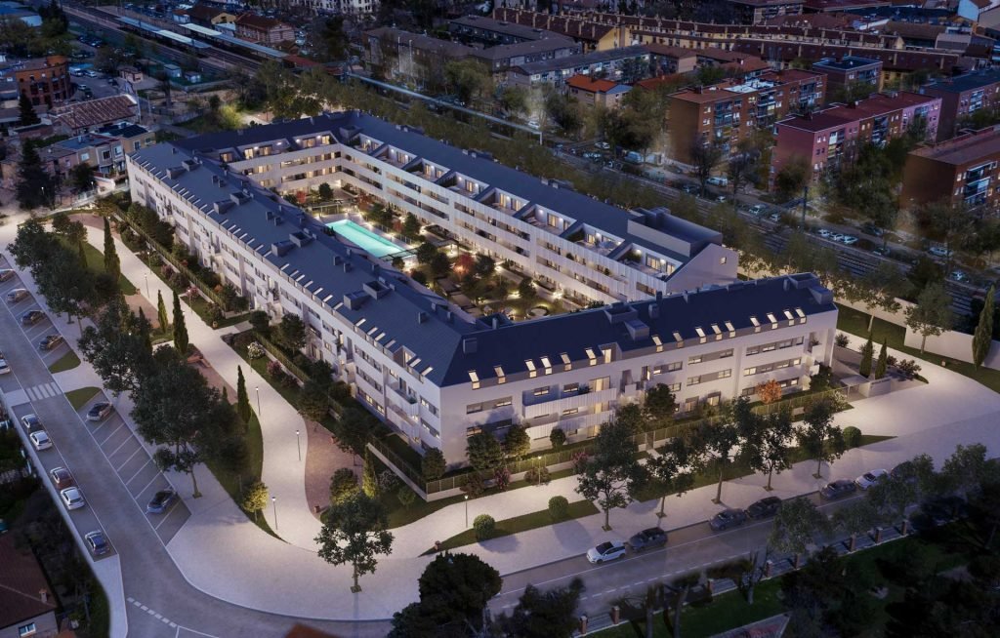
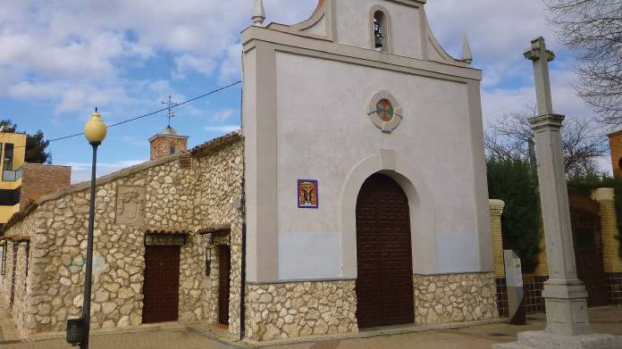

Parque Nicolás Fúster
Pulmón verde de la zona oeste, ideal para pasear, hacer deporte y disfrutar de sus lagos.

Área Residencial
Tranquila zona residencial moderna situada junto al barrio de La Cristina.

Parroquia de San José
Puntos de interés religioso y social muy vinculados a la vida cotidiana de los vecinos.

Colegio Nuestra Señora de la Providencia
centro educativo religioso concertado de la congregación de las Religiosas Teatinas de la Inmaculada Concepción
Extensa zona verde con lagos y ocio
Situado junto al barrio de La Cristina
Áreas de juego y parques biosaludables
A pocos minutos a pie de la estación C-3
Mi barrio
Nicolás Fúster, al otro lado de la vía
Una zona residencial tranquila en el suroeste de Pinto, separada del centro por las vías de Renfe.
Lo que tienes que saber
Al otro lado de la vía hay poca cosa: es una zona para vivir, no para salir.
Lo que sí hay
- El Parque Fúster, el gran espacio verde de la zona.
- Cercanías C-3 y C-3a, con la estación justo al salir del barrio.
- Autobús 455 a Getafe y la línea circular de Pinto cerca.
- Colegios: Nuestra Señora de la Providencia y, al lado, el CEIP Buenos Aires.
Lo que no suele haber
- Pocos comercios y servicios. Incluso hay locales que se han convertido en viviendas.
- Poco ocio: para bares, tiendas o cines hay que cruzar al centro.
- La vía separa: se cruza por pasos subterráneos con poca luz.
- Calles estrechas y coches aparcados que dificultan pasar.
Consejo: haz la vida tranquila en el barrio y cruza la vía para las compras y el ocio; el centro está a un paseo.
Qué se puede hacer
Pasear por el Parque Fúster
32.830 m² con cinco estanques, juegos de agua, una pasarela y los árboles de la antigua finca.
Hacer deporte gratis
Zona de calistenia (abierta en 2026), multiespacio deportivo de uso libre y pistas de petanca.
Ir con niños
Juegos infantiles en el parque y la ludoteca Manolito Gafotas dentro del recinto.
Fiestas del barrio
Verbena de San Isidro en mayo y cine al aire libre con «Cine en tu barrio».
Cruzar al centro
Al otro lado de la vía: Torre de Éboli, Plaza de la Constitución, comercios y bares.
Escaparte a Madrid
Desde la estación de Pinto, el Cercanías C-3 te deja en Atocha en menos de media hora.
Dato
El campo, justo al lado
Desde el barrio sales directamente a la zona de campo: perfecta para hacer rutas en bici o salir a andar sin tener que coger el coche.
Vivienda
Pisos nuevos junto al parque
Los bloques de ladrillo que ves en la foto son de construcción reciente: una parte nueva del barrio que ha crecido alrededor del Parque Fúster.
- Recientes: edificios nuevos, no de los más antiguos de la zona.
- Al lado del parque: el Parque Fúster está a la puerta de casa.
- Bien comunicados: la estación de Cercanías queda muy cerca.